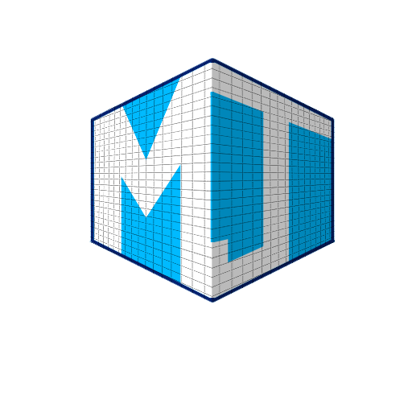

Martin Jimenez 3D Artist
Howdy do internet!
My name is Martin Jimenez and welcome to my portfolio, where I show my work I've done in my own time, a variety of fan made 3D models based on Tv shows, and mostly video games. I focus on doing environment art, and game props
What got me interested in 3D modeling was checking out cut/beta content, downloading custom-made levels or props built for games that I've played like Counter Strike, Half Life, and Skyrim, that is still active to this day. Seeing people creating content like this is what encourages me to make my own stuff and wanted to find out more about the workflow to achieve it.
If you want to contact me about anything, here are the links below: